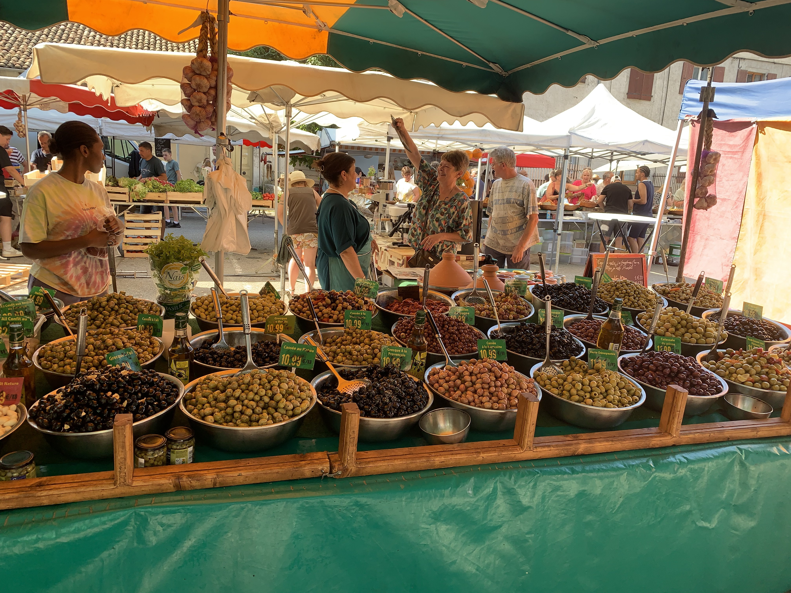

Daube
Introduzione e contesto
Potrebbe sembrare uno spezzatino, ma non lo è.
La traccia viene da mia madre, Jacqueline Gibert, e non ho motivo di metterla in discussione. Piuttosto, nel tempo ho cercato di chiarire meglio il ruolo degli ingredienti e la conduzione della cottura.

Frequento da anni la Drôme provenzale, dove torno regolarmente anche per vedere Lisbeth, che prepara una daube di riferimento. Questo ha aiutato a rimettere a fuoco alcuni pass
Per il vino, in cottura uso un Côtes du Rhône semplice (Grenache, Syrah), senza cercare struttura eccessiva. In tavola, invece, un Beaumes-de-Venise — Château Redortier — è la scelta naturale.


Ingredienti
| Ingrediente | Quantità | Unità | Note |
|---|---|---|---|
| Manzo | 700 | g | culatta |
| Concentrato di pomodoro | 1 | cucchiaio | |
| Lardo | 100 | g | |
| Prezzemolo tritato | 1 | cucchiaio | |
| Aglio | 1 | spicchio | |
| Cipolle | 2 | n | |
| Carote | 2 | n | |
| Vino rosso | 1 | bottiglia | o più |
| Sale | ½ | cucchiaino da caffè | |
| Pepe tritato | 2 | prese | |
| Bouquet garni | 1 |
Preparazione
Scelta e taglio della carne

Taglio la carne in pezzi grandi, circa 4 cm. Non più piccoli, perché devono reggere una cottura lunga senza disfarsi.
Accanto alla culatta aggiungo anche una piccola parte di carne più ricca di tessuto connettivo (reale o spalla).
Serve a fornire collagene, che con una cottura lunga e dolce si trasforma e dà al fondo una consistenza più piena.
Questo è anche una delle ragioni per cui la temperatura deve restare bassa: se la cottura è troppo aggressiva, le fibre si irrigidiscono e il risultato perde finezza.
La daube deve fremere appena, non sobbollire in modo aggressivo.
Lardellatura
Preparo il lardo tritato con aglio e prezzemolo e lardello la carne.
Lardellare significa incidere leggermente il pezzo e inserire il lardo all’interno. Non è un rivestimento esterno: il grasso deve lavorare dall’interno durante la cottura.
Uso un lardo semplice, non aromatico. Gli aromi li controllo separatamente.
Fondo di base
Sul fondo di una casseruola pesante, di ghisa o di coccio, metto alcune cotenne di maiale.

Anche questo non è un dettaglio secondario. Le cotenne hanno una funzione precisa: proteggono la carne dal contatto diretto con il fondo del recipiente e, soprattutto, cedono sostanza al liquido di cottura. Sono uno degli elementi che permettono di ottenere una salsa appena densa senza ricorrere a farina o fecola.
Aggiungo poi la carne, le cipolle e le carote tagliate grossolanamente, il bouquet garni, il sale e il pepe.
Le verdure non servono a “fare contorno”: entrano nella costruzione del fondo. La cipolla, in particolare, deve finire quasi per sparire, perché dà dolcezza, struttura e continuità alla salsa.
Il vino
Copro con vino rosso fino a immergere la carne.

Qui conviene non eccedere. La carne deve essere coperta, ma non annegata inutilmente. Durante la cottura il liquido si arricchisce dei succhi della carne, delle verdure e della gelatina rilasciata dai tagli più ricchi di collagene e dalle cotenne.
Il vino è parte essenziale del piatto, ma va pensato come elemento di cottura e di trasformazione, non come sapore isolato. Per questo preferisco vini del Rodano: hanno una struttura adatta senza portare il piatto fuori asse.
Cottura
Porto lentamente a temperatura e poi lascio cuocere a fuoco molto basso.
La regola qui è semplice: deve appena fremere. Se bolle davvero, la daube perde precisione. La lunga cottura serve a sciogliere lentamente il collagene, a far integrare vino, carne e verdure, e a costruire un fondo che non abbia bisogno di correzioni grossolane.
Indicativamente siamo intorno alle 4 ore, ma il tempo da solo non basta: bisogna guardare la carne e il fondo insieme.
Il concentrato di pomodoro
A metà cottura aggiungo poco concentrato di pomodoro.
Va usato con misura e con uno scopo preciso. Non serve a trasformare la daube in un sugo di pomodoro, ma a dare una piccola correzione di struttura e di profondità. Deve restare sullo sfondo.
Se possibile, preferisco che lavori un poco nel fondo e non che venga percepito come aggiunta estranea.
Finitura del fondo

Quando la carne è pronta, la tolgo e la tengo in caldo.
A questo punto sgrasso il fondo, ma senza accanirmi: una parte del grasso serve ancora all’equilibrio. Poi lascio ridurre lentamente il liquido, sempre senza alzare troppo il fuoco.
Se vedo che la consistenza è ancora troppo sciolta, preferisco passare una piccola parte delle verdure di cottura e reintegrarla nel fondo. È una correzione naturale, coerente con il piatto, molto diversa dall’uso di farina, fecola o roux brun (extrema ratio...).
Infine rimetto la carne nella casseruola e lascio che tutto si leghi per qualche minuto.
Note e osservazioni
La daube non va pensata come uno spezzatino al vino.
I pezzi grandi servono a conservare consistenza.
I tagli più ricchi di tessuto connettivo e le cotenne servono a dare collagene, che con una cottura dolce si trasforma e dà al fondo una densità naturale.
Se la temperatura è troppo alta, la carne si irrigidisce, il liquido perde eleganza e il risultato si appiattisce.
Nelle cotture lunghe al vino il colore può attenuarsi e il gusto perdere brillantezza: non è un errore. È il motivo per cui conviene non partire con troppo liquido e non spingere mai il bollore.
Se alla fine manca un poco di freschezza, si può correggere con una piccola aggiunta di vino, lasciata integrare brevemente, senza riaprire una vera cottura lunga.
Non userei farina o fecola, se non proprio come estrema correzione: cambiano la natura del fondo.
Le foto, ovviamente, non sono relative alla ricetta, ma afferiscono alle mie raccolte di anni di viaggi in quella regione. Qui un album che ne raccoglie alcune, afferenti sempre la cucina